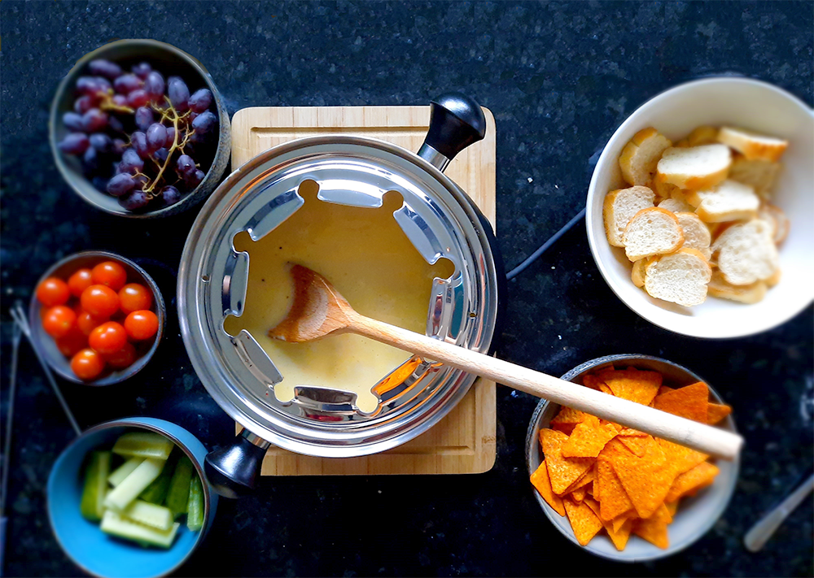

zwitserse kaasfondue

Bereidingsduur: 30 minuten
Aantal personen: 2
Ingrediënten:
200 gram emmentaler kaas
300 gram gruyere kaas
200 milliliter droge witte wijn
1 eetlepel knoflookpoeder
1 eetlepel maizena
1 theelepel nootmuskaat
1 snufje zwarte peper
naar smaak cherry tomaatjes
naar smaak paprika
naar smaak komkommer
naar smaak stokbrood
naar smaak rode druiven
naar smaak tortilla chips
200 gram emmentaler kaas
300 gram gruyere kaas
200 milliliter droge witte wijn
1 eetlepel knoflookpoeder
1 eetlepel maizena
1 theelepel nootmuskaat
1 snufje zwarte peper
naar smaak cherry tomaatjes
naar smaak paprika
naar smaak komkommer
naar smaak stokbrood
naar smaak rode druiven
naar smaak tortilla chips
Instructies:
1. Rasp de kaas en snijd de groenten die je wilt gebruiken. Warm het stokbrood op in de oven.
2. Zet de fonduepan aan en giet hierin de wijn tot deze begint te bubbelen. Voeg dan in meerdere keren de kaas toe en roer goed door elkaar.
3. Voeg maizena toe en roer door de kaas heen.
4. Breng op smaak met knoflookpoeder, nootmuskaat en zwarte peper. Dip groenten, brood en chips in de kaasfondue!
1. Rasp de kaas en snijd de groenten die je wilt gebruiken. Warm het stokbrood op in de oven.
2. Zet de fonduepan aan en giet hierin de wijn tot deze begint te bubbelen. Voeg dan in meerdere keren de kaas toe en roer goed door elkaar.
3. Voeg maizena toe en roer door de kaas heen.
4. Breng op smaak met knoflookpoeder, nootmuskaat en zwarte peper. Dip groenten, brood en chips in de kaasfondue!